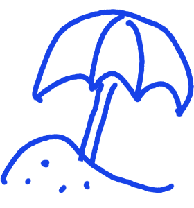
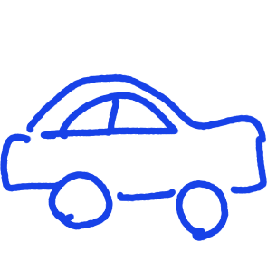

She loves the sand,
he loves the bar
Got half the beach left in my car
Sweetheart from a sweet home Alabama trailer park
Straight off the page of a magazine
A quintessential beauty queen
My Princess Di in vintage tees and torn-up jeans
Everybody thinks
When I say she's mine 'cause